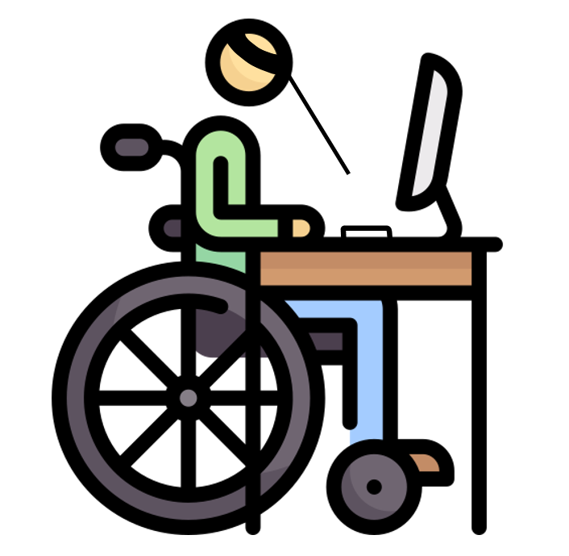

운동장애란?
몸을 마음대로 움직일 수 없는 상태로 손을 이용해서 마우스와 키보드를 사용하기 어렵습니다.
따라서 운동장애 장애인은 움직일 수 있는 신체의 일부분을 적극적으로 활용하여 웹을 이용합니다.
주로 헤드 포인터 스틱을 머리에 고정하고 키보드를 타이핑하여 웹을 이용합니다.

오직 키보드만을 이용하여 웹을 체험해보세요!
1. [빨강 책] 을 골라주세요.
2. [미리보기] 를 통해 책의 내지를 확인해주세요.
3. [닫기] 를 통해 체험을 완료해주세요.